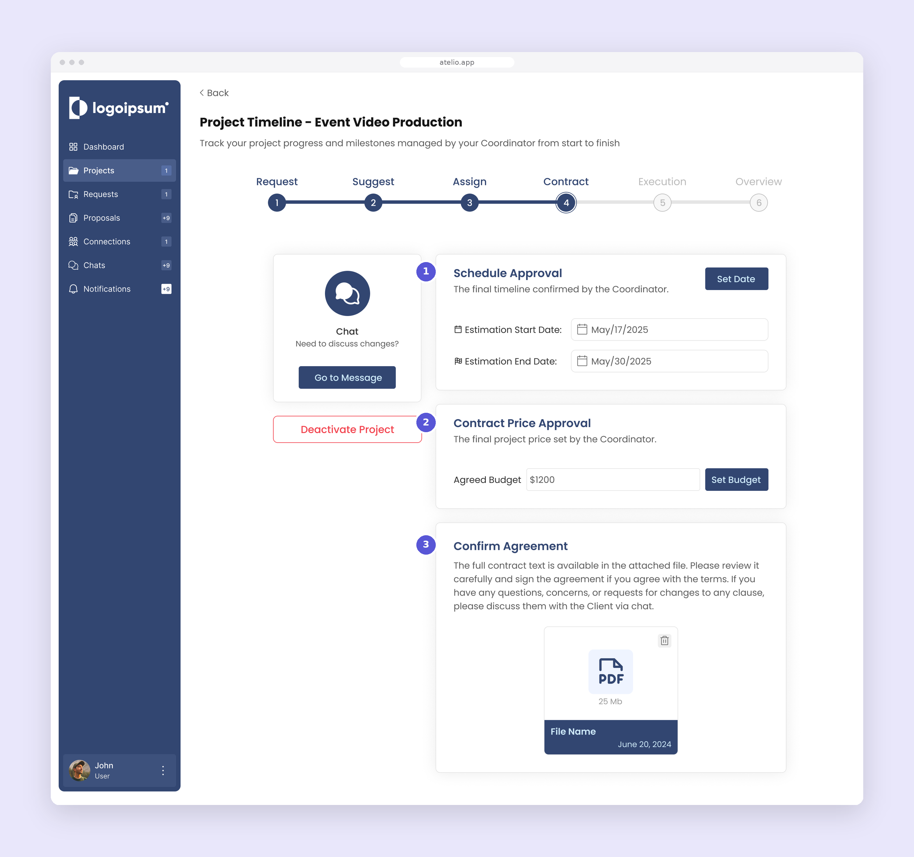
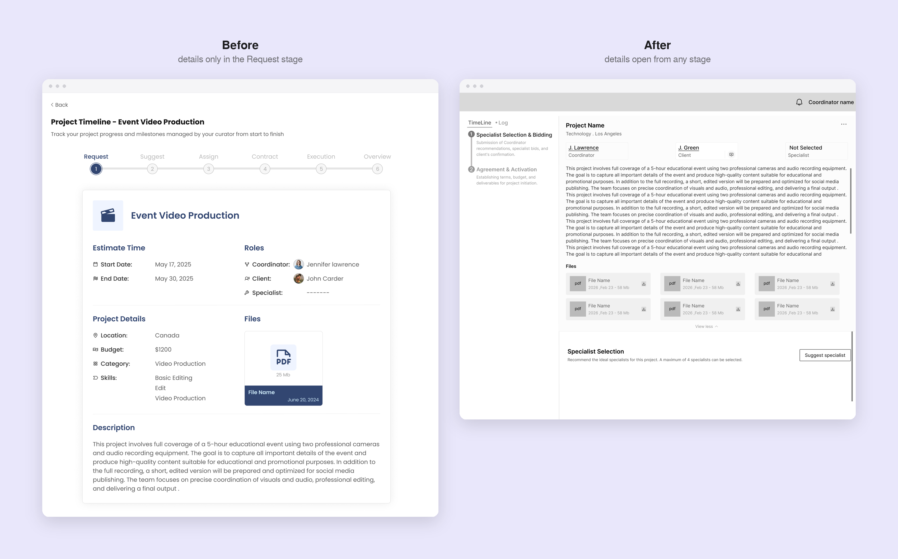
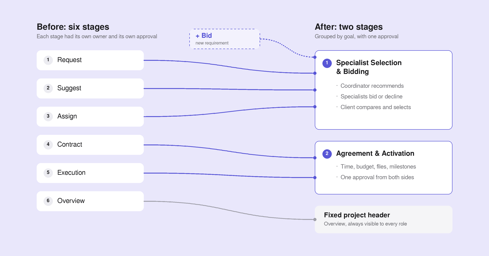
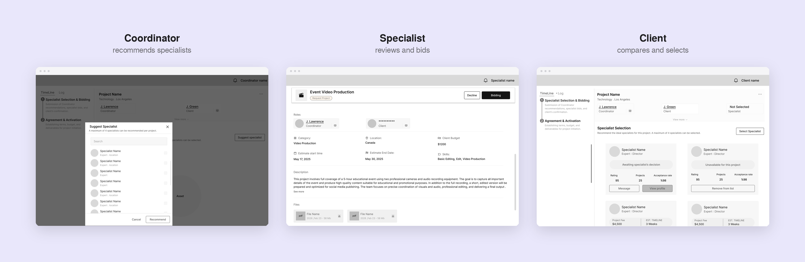
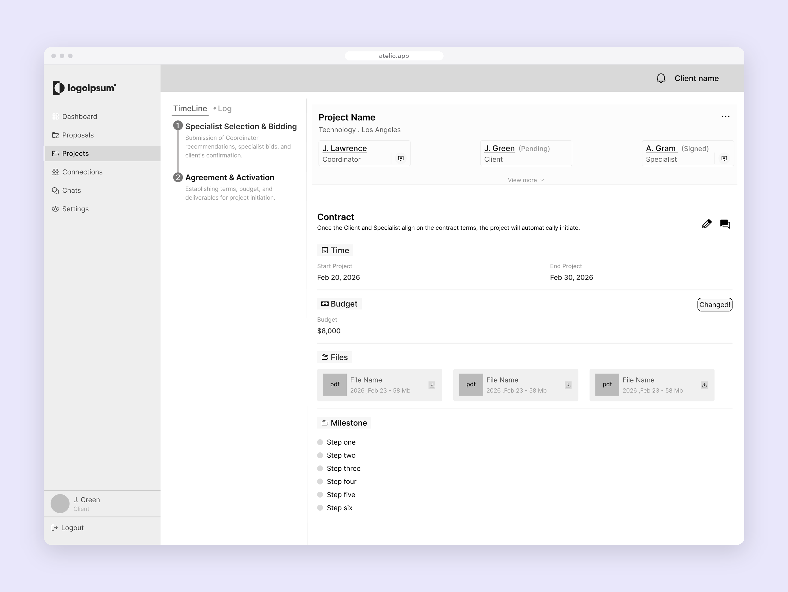
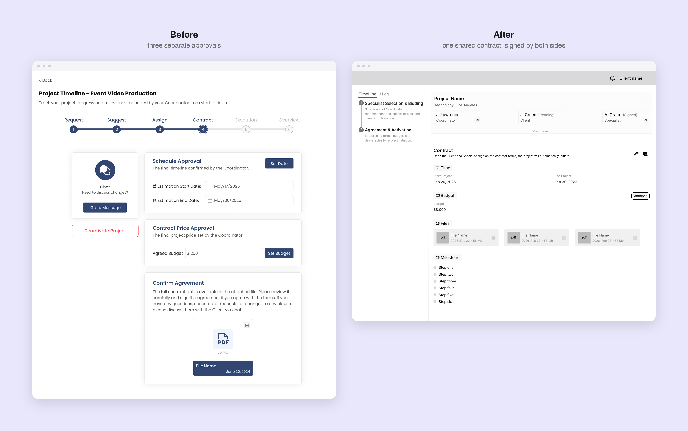

Context
Atelio is a service marketplace. Clients who need a service don't contact specialists directly. A coordinator reviews each project and suggests the right specialists from their network. Each role works in its own panel.
The problem
Every project moved through a single six-stage timeline, and all three roles saw the same one:
Request → Suggest → Assign → Contract → Execution → Overview
After launch, the business added new rules. Access started to change from stage to stage: some stages could only be acted on by the coordinator, others only by the specialist or only by the client.
The biggest challenge was approvals. Each part of the process had to be approved separately, one by one, before the project could move on. The Contract stage alone had three separate approvals: schedule, price, and the agreement itself. Milestones then needed their own stage after that. A timeline that every role saw, but only one role could move at a time, turned each approval into a possible bottleneck.
Then a new requirement arrived: specialists had to submit a bid, and the timeline had no natural place for it.

A gap I found in my own first design
While reviewing the flow, I noticed that coordinators couldn't see the project details at every stage, even though they needed them to suggest the right specialists. The details lived in the Request stage only. I had missed this in the first version.
In the redesign, the details open from a fixed project header, at any stage.

The decision: group stages by goal, not by permission
I proposed merging the six stages into two, each built around one shared goal.
Specialist Selection & Bidding (Request, Suggest, Assign, plus the new bid): coordinator recommendations, specialist bids, and the client's confirmation.
Agreement & Activation (Contract, Execution): terms, budget, files and milestones, agreed in one place.
Three principles guided the structure:
- One goal per stage, so each role understands why the project is there.
- One approval instead of many. Schedule, budget, files and milestones are reviewed together and approved with a single action.
- Shared context, always visible. Project details and everyone involved stay in a fixed header, so no role loses context at any stage.

The solution
Specialist Selection & Bidding. The coordinator recommends specialists. Each specialist reviews the project and either bids or declines. The client sees every specialist's status on their card and selects one. The project then moves to the next stage automatically.

Agreement & Activation. Time and budget, contract files and milestones sit on one screen. Both the client and the specialist approve the same contract, and each person's status (signed or pending) shows next to their name. Once both have signed, the project starts automatically.

Access grows with involvement. Specialists respond to requests and bid from their own panel, and only join the shared project page once they're selected. Until then, the selection process stays between the coordinator and the client.
A record of every change. A Log tab sits next to the timeline and records every change, such as a milestone being added, so each role can see what happened without having to ask.
A way back. If the client offboards a specialist during the agreement stage, the project returns to Specialist Selection so a new specialist can be chosen.

Outcome
The redesign was delivered as high-fidelity wireframes. In internal testing, it removed the bottlenecks the team had run into with the original flow, and the merged stages were simpler to move through. The engagement ended before the redesign was implemented, so there is no data from real users.
What I learned
- Business rules change after launch. Structuring stages around user goals, rather than around who has permission, made the flow resilient to new rules like bidding.
- Context matters for every role. Missing access to project details was small on screen but blocked a whole role.
- Test with real users earlier. Next time, I would validate the flow with real users instead of relying on internal testing alone.